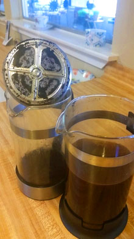
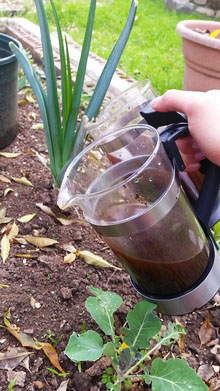
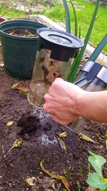

The Big Dill
"Helping people save green by being green."
Home
Indoors
Outdoors
Contact
Links Reference
Don't waste those beans!

Collect used coffee grounds
*Pour water over grounds

Find an empty space amongst your plants...

...and simply pour grounds onto garden. Refill with water to completely empty.